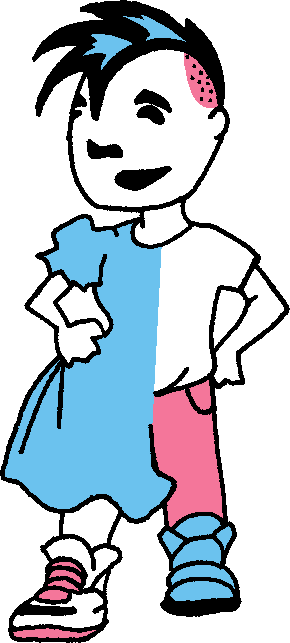
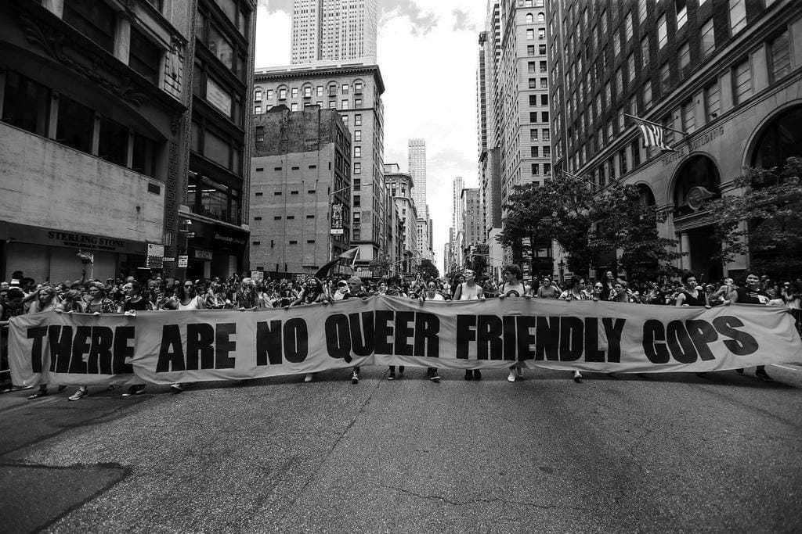

For every fascist who plans to attack drag queen story hour, there are three anti-fascists ready to defend it. For every boss who harasses you, there are ten workers who will back you up. For every judge who seeks to ban abortion, there are twenty collectives stockpiling Mifepristone and Misoprostol. For every cop who is paid to enforce transphobic legislation, there are a hundred gender outlaws determined to defy them. For every politician who tries to prohibit talking about gender in school, there are a thousand students charting their own paths beyond the binary. For every bigot who wants to etch their biases in stone, there is a movement that is already changing the world. For every person that takes one step towards freedom, there is another who finds the road to liberation a little easier.
Inspired by a poem by Nancy R. Smith. CrimethInc. Gender Subversion Kit #69-C.
Between far-right street violence and a wave of new laws restricting education, self-expression, healthcare, and reproductive autonomy, bigots are attempting to gain control over every aspect of our bodies and our sexuality. We can call this gender fascism.
This is the local manifestation of a global surge of reactionary violence and state repression. Defending each other against this assault is not just marginal "identity politics." We are challenging some of the narratives and mechanisms that are central to the functioning of authoritarian power in the twenty-first century. From Mar-a-Lago to Moscow, aspiring despots and reigning dictators tell us that normative gender roles are fundamental to the hierarchies they are trying to prop up. They're probably right.
If we want to win, though, we need a transformative framework to describe what we're fighting for.
Many advocates use language about preserving or extending rights when they set out to explain why they oppose oppression. We propose a different framework: gender self-determination.
What are the advantages of this approach?
First, it's expansive. Self-determination extends beyond defending ourselves against attacks or securing guarantees from the government. It means defining what well-being means for us and creating the conditions for it on our own terms.
Second, this framework centers autonomy. It doesn't depend upon a state or any other authority to grant or secure our "rights." Rights are a social construct; they have no bearing on reality without authorities who are prepared to enforce them, and there is no conclusive way to resolve differences about which rights people deserve. This is why state-sponsored "freedoms" grounded in supposedly timeless rights often erode as time passes. By contrast, articulating our goals in terms of self-determination focuses attention on our own desires, capabilities, and agency---and on building the collective strength we need to defend them, regardless of what takes place within the halls of power.

Third, it's inclusive. Whether you identify as trans, non-binary, queer, or some other way, all of our lives improve when each of us is free to determine our own relationship to gender. Yes, we should center the voices and experiences of trans people: trans people are especially well-positioned to know all about the forms of patriarchal violence and repression that are rampant in this society. But this struggle concerns everyone's freedom, not just the freedom of a "minority." Rather than seeing themselves as "allies" in someone else's fight, those who do not identify as trans must nonetheless understand that their own liberation is at stake here, too. Just as the assault on abortion rights did not stop in Texas and Mississippi, anything that the bigots can get away with doing to trans people they will do to other LGBTQ+ people next---and then it will turn out that some heterosexual people aren't heterosexual enough for them, either.
Finally, this approach is resonant. This framework articulates our aspirations in the same terms that many other oppressed communities and radical movements use. Understanding ourselves as part of a story much bigger than ourselves will help us to interweave our efforts with those of others. It can also help us to draw inspiration and knowledge from other movements across the globe and throughout history.
By shifting the discussion from the limits of rights to the horizon of self-determination, we begin to bring into being a radically different world, in which no authorities---neither governments, religions, nuclear families, nor anything else---can confine us within their narrow visions of who we should be and who we can become.
No judge or politician should be able to dictate how we live our lives. As long as they can control our reproductive options, our bodies and lives will be subject to the shifting winds of politics rather than our own immediate needs and values. Rather than limiting ourselves to calling for better legislators and judges, we need to secure the means to determine what we do with our bodies regardless of what courts or legislators decree.
"Choice" and "rights" are not enough. It's freedom that is at stake here, and it is clear that we can't look to those who were supposed to protect our choices and rights for that.
Concretely, this means setting up networks to help each other obtain the medical care we need, including hormones and abortion access, regardless of the obstacles. It means organizing self-defense groups. It means supporting young people who are organizing autonomously, especially trans and queer kids. It means acting in solidarity with trans and queer people in jails, prisons, and detention centers. It means creating sanctuary spaces for trans and queer people in need, and establishing legal support structures for those who are targeted by the judicial system. It means building communities in which we can can sustain ourselves, look out for each other, and take the offensive against those who intend to harm us.
Together, we can prevent courts, cops, and other bullies from ruining people's lives---and take a step towards a world in which all are free to fulfill their potential on their own terms.